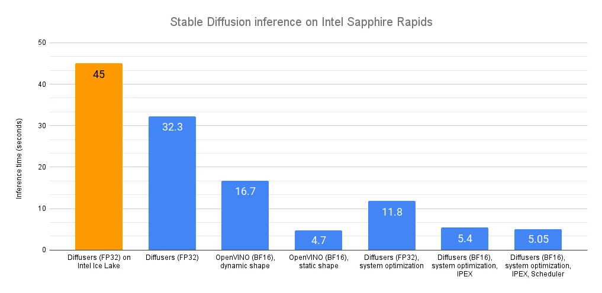

Published: 2023-03-28
Originally published at https://huggingface.co/blog/stable-diffusion-inference-intel
Recently, we introduced the latest generation of Intel Xeon CPUs (code name Sapphire Rapids), its new hardware features for deep learning acceleration, and how to use them to accelerate distributed fine-tuning and inference for natural language processing Transformers.
In this post, we're going to show you different techniques to accelerate Stable Diffusion models on Sapphire Rapids CPUs. A follow-up post will do the same for distributed fine-tuning.
At the time of writing, the simplest way to get your hands on a Sapphire Rapids server is to use the Amazon EC2
R7iz
instance family. As it's still in preview, you have to
sign up
to get access. Like in previous posts, I'm using an
r7iz.metal-16xl
instance (64 vCPU, 512GB RAM) with an Ubuntu 20.04 AMI (
ami-07cd3e6c4915b2d18
).
Let's get started! Code samples are available on Gitlab .
The Diffusers library makes it extremely simple to generate images with Stable Diffusion models. If you're not familiar with these models, here's a great illustrated introduction .
First, let's create a virtual environment with the required libraries: Transformers, Diffusers, Accelerate, and PyTorch.
virtualenv sd_inference
source sd_inference/bin/activate
pip install pip --upgrade
pip install transformers diffusers accelerate torch==1.13.1
Then, we write a simple benchmarking function that repeatedly runs inference, and returns the average latency for a single-image generation.
import time
def elapsed_time(pipeline, prompt, nb_pass=10, num_inference_steps=20):
images = pipeline(prompt, num_inference_steps=10).images
start = time.time()
for _ in range(nb_pass):
_ = pipeline(prompt, num_inference_steps=num_inference_steps, output_type="np")
end = time.time()
return (end - start) / nb_pass
Now, let's build a
StableDiffusionPipeline
with the default
float32
data type, and measure its inference latency.
from diffusers import StableDiffusionPipeline
model_id = "runwayml/stable-diffusion-v1-5"
pipe = StableDiffusionPipeline.from_pretrained(model_id)
prompt = "sailing ship in storm by Rembrandt"
latency = elapsed_time(pipe, prompt)
print(latency)
The average latency is 32.3 seconds . As demonstrated by this Intel Space , the same code runs on a previous generation Intel Xeon (code name Ice Lake) in about 45 seconds.
Out of the box, we can see that Sapphire Rapids CPUs are quite faster without any code change!
Now, let's accelerate!
Optimum Intel accelerates end-to-end pipelines on Intel architectures. Its API is extremely similar to the vanilla Diffusers API, making it trivial to adapt existing code.
Optimum Intel supports OpenVINO , an Intel open-source toolkit for high-performance inference.
Optimum Intel and OpenVINO can be installed as follows:
pip install optimum[openvino]
Starting from the code above, we only need to replace
StableDiffusionPipeline
with
OVStableDiffusionPipeline
. To load a PyTorch model and convert it to the OpenVINO format on-the-fly, you can set
export=True
when loading your model.
from optimum.intel.openvino import OVStableDiffusionPipeline
...
ov_pipe = OVStableDiffusionPipeline.from_pretrained(model_id, export=True)
latency = elapsed_time(ov_pipe, prompt)
print(latency)
ov_pipe.save_pretrained("./openvino")
OpenVINO automatically optimizes the model for the
bfloat16
format. Thanks to this, the average latency is now
16.7 seconds
, a sweet 2x speedup.
The pipeline above support dynamic input shapes, with no restriction on the number of images or their resolution. With Stable Diffusion, your application is usually restricted to one (or a few) different output resolutions, such as 512x512, or 256x256. Thus, it makes a lot of sense to unlock significant acceleration by reshaping the pipeline to a fixed resolution. If you need more than one output resolution, you can simply maintain a few pipeline instances, one for each resolution.
ov_pipe.reshape(batch_size=1, height=512, width=512, num_images_per_prompt=1)
latency = elapsed_time(ov_pipe, prompt)
With a static shape, average latency is slashed to 4.7 seconds , an additional 3.5x speedup.
As you can see, OpenVINO is a simple and efficient way to accelerate Stable Diffusion inference. When combined with a Sapphire Rapids CPU, it delivers almost 10x speedup compared to vanilla inference on Ice Lake Xeons.
If you can't or don't want to use OpenVINO, the rest of this post will show you a series of other optimization techniques. Fasten your seatbelt!
Diffuser models are large multi-gigabyte models, and image generation is a memory-intensive operation. By installing a high-performance memory allocation library, we should be able to speed up memory operations and parallelize them across the Xeon cores. Please note that this will change the default memory allocation library on your system. Of course, you can go back to the default library by uninstalling the new one.
jemalloc
and
tcmalloc
are equally interesting. Here, I'm installing
jemalloc
as my tests give it a slight performance edge. It can also be tweaked for a particular workload, for example to maximize CPU utilization. You can refer to the
tuning guide
for details.
sudo apt-get install -y libjemalloc-dev
export LD_PRELOAD=$LD_PRELOAD:/usr/lib/x86_64-linux-gnu/libjemalloc.so
export MALLOC_CONF="oversize_threshold:1,background_thread:true,metadata_thp:auto,dirty_decay_ms: 60000,muzzy_decay_ms:60000"
Next, we install the
libiomp
library to optimize parallel processing. It's part of
Intel OpenMP* Runtime
.
sudo apt-get install intel-mkl
export LD_PRELOAD=$LD_PRELOAD:/usr/lib/x86_64-linux-gnu/libiomp5.so
export OMP_NUM_THREADS=32
Finally, we install the numactl command line tool. This lets us pin our Python process to specific cores, and avoid some of the overhead related to context switching.
numactl -C 0-31 python sd_blog_1.py
Thanks to these optimizations, our original Diffusers code now predicts in 11.8 seconds . That's almost 3x faster, without any code change. These tools are certainly working great on our 32-core Xeon.
We're far from done. Let's add the Intel Extension for PyTorch to the mix.
The Intel Extension for Pytorch (IPEX) extends PyTorch and takes advantage of hardware acceleration features present on Intel CPUs, such as AVX-512 Vector Neural Network Instructions (AVX512 VNNI) and Advanced Matrix Extensions (AMX).
Let's install it.
pip install intel_extension_for_pytorch==1.13.100
We then update our code to optimize each pipeline element with IPEX (you can list them by printing the
pipe
object). This requires converting them to the channels-last format.
import torch
import intel_extension_for_pytorch as ipex
...
pipe = StableDiffusionPipeline.from_pretrained(model_id)
pipe.unet = pipe.unet.to(memory_format=torch.channels_last)
pipe.vae = pipe.vae.to(memory_format=torch.channels_last)
pipe.text_encoder = pipe.text_encoder.to(memory_format=torch.channels_last)
pipe.safety_checker = pipe.safety_checker.to(memory_format=torch.channels_last)
sample = torch.randn(2,4,64,64)
timestep = torch.rand(1)*999
encoder_hidden_status = torch.randn(2,77,768)
input_example = (sample, timestep, encoder_hidden_status)
pipe.unet = ipex.optimize(pipe.unet.eval(), dtype=torch.bfloat16, inplace=True, sample_input=input_example)
pipe.vae = ipex.optimize(pipe.vae.eval(), dtype=torch.bfloat16, inplace=True)
pipe.text_encoder = ipex.optimize(pipe.text_encoder.eval(), dtype=torch.bfloat16, inplace=True)
pipe.safety_checker = ipex.optimize(pipe.safety_checker.eval(), dtype=torch.bfloat16, inplace=True)
We also enable the
bloat16
data format to leverage the AMX tile matrix multiply unit (TMMU) accelerator present on Sapphire Rapids CPUs.
with torch.cpu.amp.autocast(enabled=True, dtype=torch.bfloat16):
latency = elapsed_time(pipe, prompt)
print(latency)
With this updated version, inference latency is further reduced from 11.9 seconds to 5.4 seconds . That's more than 2x acceleration thanks to IPEX and AMX.
Can we extract a bit more performance? Yes, with schedulers!
The Diffusers library lets us attach a scheduler to a Stable Diffusion pipeline. Schedulers try to find the best trade-off between denoising speed and denoising quality.
According to the documentation: " At the time of writing this doc DPMSolverMultistepScheduler gives arguably the best speed/quality trade-off and can be run with as little as 20 steps. "
Let's try it.
from diffusers import StableDiffusionPipeline, DPMSolverMultistepScheduler
...
dpm = DPMSolverMultistepScheduler.from_pretrained(model_id, subfolder="scheduler")
pipe = StableDiffusionPipeline.from_pretrained(model_id, scheduler=dpm)
With this final version, inference latency is now down to 5.05 seconds . Compared to our initial Sapphire Rapids baseline (32.3 seconds), this is almost 6.5x faster!
 *Environment: Amazon EC2 r7iz.metal-16xl, Ubuntu 20.04, Linux 5.15.0-1031-aws, libjemalloc-dev 5.2.1-1, intel-mkl 2020.0.166-1, PyTorch 1.13.1, Intel Extension for PyTorch 1.13.1, transformers 4.27.2, diffusers 0.14, accelerate 0.17.1, openvino 2023.0.0.dev20230217, optimum 1.7.1, optimum-intel 1.7*The ability to generate high-quality images in seconds should work well for a lot of use cases, such as customer apps, content generation for marketing and media, or synthetic data for dataset augmentation.
Here are some resources to help you get started:
If you have questions or feedback, we'd love to read them on the Hugging Face forum .
Thanks for reading!
Julien Simon is the Chief Evangelist at Hugging Face , where he focuses on democratizing AI and making transformers accessible to everyone. A leading voice in open-source AI and small language models, he helps developers and enterprises bring their AI ideas to life. In his spare time, he reads the works of JRR Tolkien again and again.